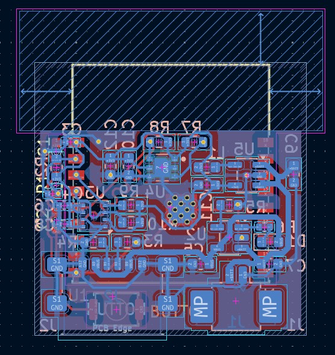
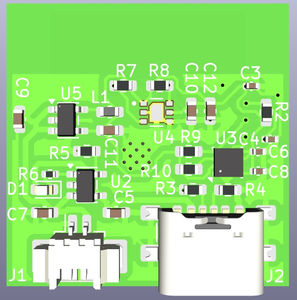
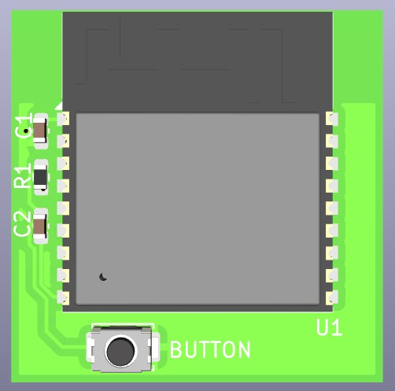

Environmental Sensor Node – ESP32‑C3 Air Quality & Weather Monitor
Project Introduction
This project is a compact environmental monitoring PCB designed to measure multiple atmospheric parameters with high accuracy. It integrates BME280 for temperature, humidity, and pressure, and Sensirion SPG40 for air quality and CO₂‑equivalent estimation. The system is powered by an ESP32‑C3‑VROOM‑02 microcontroller, enabling WiFi and Bluetooth connectivity for real‑time dashboards, cloud logging, and smart‑home integration.
The device supports USB‑C charging, Li‑ion battery operation, and ultra‑low‑power deep sleep, making it suitable for both indoor and outdoor monitoring.
1. Hardware Design
Key hardware components include:
- ESP32‑C3‑VROOM‑02: WiFi + Bluetooth LE microcontroller
- BME280: Temperature, humidity, and atmospheric pressure sensor
- SPG40: VOC and CO₂‑equivalent air quality sensor
- Power: 3.7V Li‑ion battery + USB‑C charging
- Charger IC: MCP73831 Li‑ion charger
- DC‑DC Converter: TPS62203 step‑down regulator
- Board Type: Multilayer PCB
- EDA Tool: KiCad

Project

PCB Layout View

Bottom View

Top View
2. Firmware & Features
The firmware runs on the ESP32‑C3 and provides real‑time environmental monitoring, cloud connectivity, and power‑optimized operation. A built‑in configuration interface allows users to connect the device to WiFi.
- Real‑time measurements: Temperature, humidity, pressure, VOC index, CO₂‑equivalent
- Connectivity: WiFi + Bluetooth LE
- Dashboard: Web‑based UI for live monitoring
- Cloud logging: Automatic data upload
- Alerts: Threshold‑based notifications
- Power modes: Deep sleep between measurements
3. Usage
To use the environmental sensor node:
- Power the device via USB‑C or a 3.7V Li‑ion battery
- Place it in the desired indoor or outdoor location
- Connect to WiFi using the configuration interface
- Monitor data through the web dashboard
- Review historical trends and receive alerts
4. Skills Demonstrated
- PCB Design: KiCad, multilayer routing
- Embedded Systems: ESP32‑C3, low‑power design
- Wireless: WiFi + BLE, RF layout
- Sensing: Temperature, humidity, pressure, VOC, CO₂‑equivalent
- Firmware: ESP-IDF/Arduino framework
- Power Management: DC‑DC conversion, deep sleep
- Tools: Oscilloscope, multimeter, logic analyzer
- Integration: Cloud dashboards, web UI